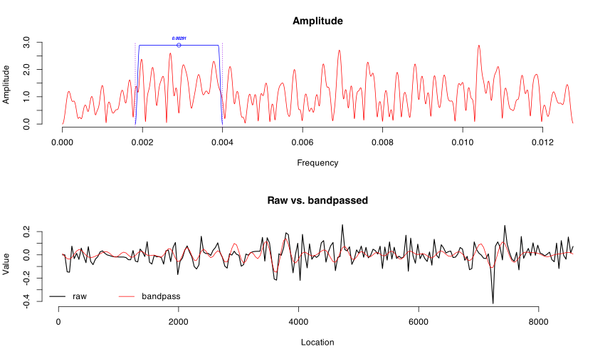

![]()
# read in the geochem data using a function from the data.table package
geochem.raw <- fread(paste0(fpath, "geochem.csv"), sep = ";")
# first remove the rows with NAs
geochem <- na.omit(geochem.raw)
# function find the median time interval and interpolates time
# series to it
geochem.int <- linterp(geochem, verbose = FALSE, genplot = FALSE)
# ...median interval of 2.4 years
# now we do the same with the principal components and diatom data
diatoms <- fread(paste0(fpath, "diatoms.csv"), sep = ";")
# create separate time series for each column, remove NAs if present
# and then interpolate to median time interval
pc1 <- dplyr::select(diatoms, age_cal_BP, PC1_marine) %>% na.omit()
pc1.int <- linterp(pc1, verbose = FALSE, genplot = FALSE)
# ...median interval of 39.2
pc2 <- dplyr::select(diatoms, age_cal_BP, PC2_moisture) %>% na.omit()
pc2.int <- linterp(pc2, verbose = FALSE, genplot = FALSE)
# ...mediam interval of 39.2
paralia <- dplyr::select(diatoms, age_cal_BP, Paralia_sulcata) %>% na.omit()
paralia.int <- linterp(paralia, verbose = FALSE, genplot = FALSE)
# ...median interval of 38.3
benthics <- dplyr::select(diatoms, age_cal_BP, Dilute_benthics) %>% na.omit()
benthics.int <- linterp(benthics, verbose = FALSE, genplot = FALSE)
# ...median interval of 39
offshore <- dplyr::select(diatoms, age_cal_BP, Marine_offshore) %>% na.omit()
offshore.int <- linterp(offshore, verbose = FALSE, genplot = FALSE)
# ...median interval of 38.3Wavelet analysis of diatom time series
On this page I reproduce the analysis in the following paper:
Kirsten, K. L., Haberzettl, T., Wündsch, M., Frenzel, P., Meschner, S., Smit, A. J., … & Meadows, M. E. (2018). A multiproxy study of the ocean-atmospheric forcing and the impact of sea-level changes on the southern Cape coast, South Africa during the Holocene. Palaeogeography, Palaeoclimatology, Palaeoecology, 496, 282-291.
1 Methodology
1.1 Data preparation
Wavelet analysis requires an evenly-spaced time series without missing values (NAs). To this end, we resampled the time series to the median sampling interval for the particular time series, i.e. a median interval of 2.4 years for the geochemistry data, and 38.3 to 39.2 years for the diatom and Principal Components (PC) series. This was accomplished with the linterp() function in the astrochron package. The individual time series are inconsistent in their length and the number of NAs and we therefore treated each time series independently.
The serial autocorrelation structure of the data was examined using the auto.arima() function of the forcast package. We noted that the time series have a first-order autoregressive correlation (AR1) structure, which is not uncommon in natural time series. In order to improve the detection of some of the higher frequency peaks, this serial autocorrelation was removed (i.e. ‘pre-whitened’) by using the prewhiteAR() function in the astrochron package. The result of this conditioning was that the residual error (aside from measurement error) that remained approaches white noise superimposed on the signal of interest. In the process, we also removed the linear trend from the data by applying a linear regression and taking the residuals, which became the new time series used in the subsequent analyses.
1.2 Wavelet decomposition
We apply the Morlet wavelet to decompose our time series into the time-frequency space (details given by Torrence and Compo, 1998; Murakami and Kawamura, 2001). Wavelet analysis is commonly used in time series or stratigraphic studies (Meyers, 1993; Prokoph & Barthelmes, 1996; Hosoda & Kawamura, 2004), as it allows us to examine the data sets’ temporal dynamics by identifying ‘regions’ of repetitive or regular behaviour based on its harmonic or oscillatory characteristics. In short, wavelet analysis locates the dominant modes of variability and represents these as a function of time. The advantage of wavelet transforms over other spectral decomposition methods, such as the Fourier transform, is that its allows us to identify geophysical features that might have variable rates over the duration of the study period, and it also permits us to locate multiple periodicities that may be present simultaneously – for an overview of wavelet analysis, see Lau & Weng (1995) and Torrence & Compo (1998). Here, a continuous wavelet transform was performed using the analyze.wavelet() function provided by the WaveletComp package. This function returns the wavelet power spectrum as well as p-values testing the null hypothesis that a period is not-significant at a certain time.
1.3 Signal reconstruction and bandpass filtering
We then used the reconstruct() function to reassemble a time series from its wavelet properties. We permit only a narrow range of periodicities (analogous to the bandpass filter later on) to feed into the reconstruction. These periodicities are further selected by using only those at a power greater than 0.02 and at a significance level of less than 0.05. The resultant graphs are paired with graphs of the original (but interpolated, pre-whitened and detrended) data and provides confirmation that the wavelet analysis has indeed recovered the major modes in the time frequency domain that formed the signal in our stratigraphies.
A more precise outcome than provided by the reconstruct method, above, was achieved by the application of bandpass filters. Bandpass filters allow signals through that fall within a certain “band” of frequencies while discriminating against signals that are present at other frequencies. We used a bandpass filter (in the astrochron package) within a tapered cosine window. We filtered the data to exclude everything below and above certain frequencies (i.e. localising specific peaks in the wavelet power spectra) and then superimposed these filtered bands onto the original data. Assurance about the periodic features of our time series was obtained in this manner. Furthermore, by selecting certain narrow bands from amongst the range of power spectra returned by wavelet analysis, bandpass filtering also allowed us to more closely evaluate which regions along the length of the time series were comprised of the major periodicities that were recovered.
2 The analyses
2.1 Interpolation
The geochem and PC/diatom data are different in terms of their sampling frequency and time series length, which has important implications for the frequency of the oscillations that can be detected. The sampling frequency will limit the minimum length of the wave period that can be detected. The geochem data with a sampling interval (dt) of 2.4 years lends itself to the detection of wave periods of no less than 2 * dt, i.e. 4.8 years. The PC/diatom data are courser grained, and 80 years is probably the best we can do as far as the minimum detectable wave period is concerned. Time series length (n) influences the maximum wave period that can be detected. Typically this limit is the floor(n/3) * dt. For the geochem data this is 2988 and for the diatom data it is 2400.
2.2 ARIMA and pre-whitening
I’ll continue the analysis using the geochem data, and later I’ll return to the diatom and PC time series. Now I am interested to know about the serial autocorrelation structure of the data. I use the forcast package’s auto.arima() function to automatically detect the Autoregressive Integrated Moving Averages (ARIMA) correlation structure. The outcome is printed below – we see that the geochem data have a ARIMA(1,1,3) correlation structure. The printout for the other data sets is not shown, but it is more-or-less the same. Knowing this is useful, because I need to remove this autocorrelation before I can continue. I’ll do this next.
# check for autocorreltion using 'auto.arima()' in the 'forecast' package...
auto.arima(geochem.int$Si_Al, max.p = 3, max.q = 3, stationary = FALSE,
seasonal = FALSE)Series: geochem.int$Si_Al
ARIMA(1,1,3)
Coefficients:
ar1 ma1 ma2 ma3
0.6267 -0.6858 -0.2771 0.0595
s.e. 0.0571 0.0612 0.0201 0.0353
sigma^2 = 0.9505: log likelihood = -5203.26
AIC=10416.52 AICc=10416.53 BIC=10447.64# ...yes, significant autocorrelation is present, i.e. ARIMA(1,1,3) in this caseAbove I showed that the data are serially correlated. This is expected of time series. I should remove the autocorrelation before I do the wavelet analyses. One way to do this is to fit an ARIMA model and then continue with the rest of the workflow using the models’ residuals. Instead I will use the astrochron package’s prewhiteAR() function that does approximately the same, but just with a bit less fine control over how the model is specified. The result of this conditioning is that the only error (aside from measurement etc. error) that remains is white noise that’s superimposed on the signal of interest. A plot (below) also shows that the time serious is now detrended.
# apply pre-whitening to the data; this effectively removes the above
# autocorrelation structure and the residuals are then used for the remainder
# of the analyses; this allows us to easily identify the embedded spectral
# frequencies
geochem.int.w <- prewhiteAR(geochem.int, order = 3, method = "mle", aic = TRUE,
genplot = FALSE, verbose = FALSE)
colnames(geochem.int.w) <- c("age_cal_BP","Si_Al")
# the diatom and PC data
pc1.int.w <- prewhiteAR(pc1.int, order = 3, method = "mle", aic = TRUE,
genplot = FALSE, verbose = FALSE)
colnames(pc1.int.w) <- c("age_cal_BP","pc1")
pc2.int.w <- prewhiteAR(pc2.int, order = 3, method = "mle", aic = TRUE,
genplot = FALSE, verbose = FALSE)
colnames(pc2.int.w) <- c("age_cal_BP","pc2")
paralia.int.w <- prewhiteAR(paralia.int, order = 3, method = "mle", aic = TRUE,
genplot = FALSE, verbose = FALSE)
colnames(paralia.int.w) <- c("age_cal_BP","paralia")
benthics.int.w <- prewhiteAR(benthics.int, order = 3, method = "mle", aic = TRUE,
genplot = FALSE, verbose = FALSE)
colnames(benthics.int.w) <- c("age_cal_BP","benthics")
offshore.int.w <- prewhiteAR(offshore.int, order = 3, method = "mle", aic = TRUE,
genplot = FALSE, verbose = FALSE)
colnames(offshore.int.w) <- c("age_cal_BP","offshore")What effect has this pre-whitening had on the appearance of the time series? Producing a plot of the data before (raw), interpolated and pre-whitening clearly shows the effect for the geochem data:
source(paste0(fpath, "custom_theme.R"))
library(ggplot2)
pl1 <- ggplot(geochem.raw, (aes(x = age_cal_BP, y = Si_Al))) +
geom_line(col = "black", size = 0.2) + xlab("Age (cal BP)") + ylab("Si/Al") +
ggtitle("a. Raw data")
pl2 <- ggplot(geochem.int, (aes(x = age_cal_BP, y = Si_Al))) +
geom_line(col = "blue", size = 0.2) + xlab("Age (cal BP)") + ylab("Si/Al") +
ggtitle("b. Interpolated and gap-filled data")
pl3 <- ggplot(geochem.int.w, (aes(x = age_cal_BP, y = Si_Al))) +
geom_line(col = "red", size = 0.2) + xlab("Age (cal BP)") + ylab("Si/Al") +
ggtitle("c. Pre-whitened and detrended")
library(grid)
library(gridExtra)
grid.newpage()
pushViewport(viewport(layout = grid.layout(3, 1)))
vplayout <- function(x, y) viewport(layout.pos.row = x, layout.pos.col = y)
print(pl1, vp = vplayout(1,1))
print(pl2, vp = vplayout(2,1))
print(pl3, vp = vplayout(3,1))2.3 Wavelet transformations
Next I do a wavelet analysis using the analyze.wavelet() function this lives in the WaveletComp package. I test the null hypothesis that there is no periodicity in the time series using p-values obtained from a simulation to indicate any significant periodicities. Then I plot the wavelet power spectrum of a single time series using the wt.image() function in the same package. The \(y\)-axis shows the Fourier periods and the bottom shows time step counts. I also draw contours to outline the areas of significant wavelet power. This is where to find the wave periods of events that are captured by the data. It seems as if most of the periodicities are <50 years or so, but a weak period also occurs of 1,024 to 2,048 years around 6,000 to 8,000 years ago.
# ts.plot(geochem.int.w$Si_Al)
# using modified function to stop annoying default behaviour
# (see inside 'functions.R')
wl <- analyze.wavelet_(geochem.int.w, "Si_Al", loess.span = 0, dt = 2.4,
dj = 1/50, lowerPeriod = 6, make.pval = TRUE, n.sim = 50,
method = "white.noise", verbose = FALSE)
# plot the wavelets
wt.image(wl, siglvl = 0.05, col.contour = "black", color.key = "quantile",
legend.params = list(lab = "wavelet power levels", label.digits = 2,
shrink = 1.0), timelab = "Years",
periodlab = "Period", lwd = 1)
2.4 Reconstruct
I now use the reconstruct() function to reassemble a time series from its wavelet properties extracted from the data series just analysed. I permit only a narrow range of frequencies (analogous to the bandpass filter later on) to feed into the reconstruction. These frequencies are further selected by using only those at a power greater than 0.02 and at a significance level of less than 0.05. The graph shows quite a good reconstruction – the reconstructed time series matches the original (interpolated, whitened and detrended) one very nicely. This shows that the events the drive the Si/Al ratios occur at periodicities of less than 50 years (i.e. frequencies of >0.02 per year).
# using modified 'reconstruct' function to prevent plotting of sub-title
reconstruct_(wl, plot.waves = FALSE, lwd = c(1.2, 0.8), legend.coords = "bottomleft",
only.coi = TRUE, lvl = 0.02, sel.lower = 6, sel.upper = 50,
col = c("black","red"), timelab = "Years", siglvl = 0.05,
legend.text = c("original (detrended)", "reconstructed"),
verbose = FALSE)
2.5 Bandpass filters
The same outcome as above can be achieved using bandpass filters. Bandpass filters allow signals through that fall within a certain “band” of frequencies while discriminating against signals that are present at other frequencies. This particular bandpass filter (in the astrochron package) applies the filter within a tapered cosine window. Still using the geochem data, I filter the data to exclude everything below the low frequency of 0.2 (once every five years) and the high frequency of 0.02 (one in 50 years) and then I superimpose the filtered bands onto the original (interpolated, whitened and detrended) data. The signal that is permitted to pass through faithfully captures the frequency spectra present in the original data (the second of the two graphs is informative).
# Using the pre-whitened data, apply band-pass filters using a
# cosine-tapered window
# note: this function was modified and it can be found in the file 'functions.R'
bp1 <- bandpass_(geochem.int.w, demean = FALSE, detrend = TRUE, padfac = 500, win = 2,
flow = 1/50, fhigh = 1/5, p = .1, verbose = FALSE, output = 1)
str(bp1)'data.frame': 3733 obs. of 2 variables:
$ age_cal_BP: num -45 -42.6 -40.2 -37.8 -35.4 ...
$ Si_Al : num 0.475 1.132 -0.232 -1.003 -0.238 ...ht(bp1)| age_cal_BP | Si_Al | |
|---|---|---|
| 1 | -45.0 | 0.4753968 |
| 2 | -42.6 | 1.1315122 |
| 3 | -40.2 | -0.2321325 |
| 4 | -37.8 | -1.0029499 |
| 5 | -35.4 | -0.2381605 |
| 6 | -33.0 | 0.1838719 |
| 7 | -30.6 | -0.1033707 |
| 3727 | 8897.4 | -0.0196629 |
| 3728 | 8899.8 | -0.0552409 |
| 3729 | 8902.2 | 0.4204507 |
| 3730 | 8904.6 | 0.8785037 |
| 3731 | 8907.0 | -0.8718957 |
| 3732 | 8909.4 | -0.3550191 |
| 3733 | 8911.8 | -0.3612811 |
What happens if we narrow the band to range from once in five years (0.2) to once in 10 years (0.1)? The resultant signal is still similar to the original series, but more so at 8,000 years and less so from 0 to ~6000 years.
bp2 <- bandpass_(geochem.int.w, demean = FALSE, detrend = TRUE, padfac = 500, win = 2,
flow = 1/10, fhigh = 1/5, p = .1, verbose = FALSE, output = 2)
Higher frequencies (1/10 to 1/50) better match the earlier portions of the time series, as shown here. It seems that we need both frequency ranges (1/5 to 1/10 and 1/10 to 1/50) to permit the full set of frequencies through that’s necessary to shape the signals present in the original geochem series—this is in fact what the first of the bandpass figures, above, does.
bp3 <- bandpass_(geochem.int.w, demean = FALSE, detrend = TRUE, padfac = 500, win = 2,
flow = 1/50, fhigh = 1/10, p = .1, verbose = FALSE, output = 2)
What about frequencies higher than 0.02 (1/50)? As seen below, those frequencies carry very little (if any) of the signal that is necessary to construct the geochem data. This is the same result as the wavelet analysis and the reconstruction of the data based on the wavelet properties of the original data.
bp4 <- bandpass_(geochem.int.w, demean = FALSE, detrend = TRUE, padfac = 500, win = 2,
flow = 1/100, fhigh = 1/50, p = .1, verbose = FALSE, output = 2)
3 Diatoms and the PC axes
Now I take a look at the wavelets and pass bands of the diatoms and PC axes. I’ll just show the results here, and hopefully this is sufficient to draw one’s own conclusions.
3.1 The first Principal Components axis
First I do a wavelet analysis as before with the geochem data. The parameters that go into the equation are somewhat different to accommodate the different nature of these data.
# ts.plot(pc1.int.w$pc1)
w2 <- analyze.wavelet_(pc1.int.w, "pc1", loess.span = 0, dt = 39.2,
dj = 1/50, lowerPeriod = 40, make.pval = TRUE, n.sim = 50,
method = "white.noise", verbose = FALSE)
wt.image(w2, siglvl = 0.05, col.contour = "black", color.key = "quantile",
legend.params = list(lab = "wavelet power levels", label.digits = 2,
shrink = 1.0), timelab = "Years",
periodlab = "Period", lwd = 1, plot.ridge = FALSE)And here are two bandpass filters applied to the data (note the frequencies specified in the equations):
pc1.bp <- bandpass_(pc1.int.w, demean = FALSE, detrend = TRUE, padfac = 500,
win = 2, flow = 1/550, fhigh = 1/50, p = .1,
verbose = FALSE, output = 2)
pc1.2.bp <- bandpass_(pc1.int.w, demean = FALSE, detrend = TRUE, padfac = 500,
win = 2, flow = 1/550, fhigh = 1/250, p = .1,
verbose = FALSE, output = 2)
3.2 The second Principal Components axis
Here and further down I omit the bandpass filters. These can easily be done using the code provided.
# ts.plot(pc2.int.w$pc2)
w3 <- analyze.wavelet_(pc2.int.w, "pc2", loess.span = 0, dt = 39.2,
dj = 1/50, lowerPeriod = 40, make.pval = TRUE, n.sim = 50,
method = "white.noise", verbose = FALSE)wt.image(w3, siglvl = 0.05, col.contour = "black", color.key = "quantile",
legend.params = list(lab = "wavelet power levels", label.digits = 2,
shrink = 1.0), timelab = "Years",
periodlab = "Period", lwd = 1, plot.ridge = FALSE)
3.3 Paralia sulcata
# ts.plot(paralia.int.w$paralia)
w3 <- analyze.wavelet_(paralia.int.w, "paralia", loess.span = 0, dt = 39.2,
dj = 1/50, lowerPeriod = 40, make.pval = TRUE, n.sim = 50,
method = "white.noise", verbose = FALSE)wt.image(w3, siglvl = 0.05, col.contour = "black", color.key = "quantile",
legend.params = list(lab = "wavelet power levels", label.digits = 2,
shrink = 1.0), timelab = "Years",
periodlab = "Period", lwd = 1, plot.ridge = FALSE)3.4 Dilute benthics
# ts.plot(benthics.int.w$benthics)
w4 <- analyze.wavelet_(benthics.int.w, "benthics", loess.span = 0, dt = 39.2,
dj = 1/50, lowerPeriod = 40, make.pval = TRUE, n.sim = 50,
method = "white.noise", verbose = FALSE)wt.image(w4, siglvl = 0.05, col.contour = "black", color.key = "quantile",
legend.params = list(lab = "wavelet power levels", label.digits = 2,
shrink = 1.0), timelab = "Years",
periodlab = "Period", lwd = 1, plot.ridge = FALSE)3.5 Marine offshore
# ts.plot(offshore.int.w$offshore)
w5 <- analyze.wavelet_(offshore.int.w, "offshore", loess.span = 0, dt = 39.2,
dj = 1/50, lowerPeriod = 40, make.pval = TRUE, n.sim = 50,
method = "white.noise", verbose = FALSE)wt.image(w5, siglvl = 0.05, col.contour = "black", color.key = "quantile",
legend.params = list(lab = "wavelet power levels", label.digits = 2,
shrink = 1.0), timelab = "Years",
periodlab = "Period", lwd = 1, plot.ridge = FALSE)
4 References
Hosoda, K., & Kawamura, H. (2004). Examination of the merged sea surface temperature using wavelet analysis. Journal of Oceanography, 60(5), 843–852.
Lau, K. M., & Weng, H. (1995). Climate signal detection using wavelet transform: How to make a time series sing. Bulletin of the American Meteorological Society, 76(12), 2391–2402.
Meyers, S. D., Kelly, B. G., & O’Brien, J. J. (1993). An introduction to wavelet analysis in oceanography and meteorology: With application to the dispersion of Yanai waves. Monthly Weather Review.
Prokoph, A., & Barthelmes, F. (1996). Detection of nonstationarities in geological time series: Wavelet transform of chaotic and cyclic sequences. Computers and Geosciences, 22(10), 1097–1108.
Torrence, C., & Compo, G. P. (1998). A practical guide to wavelet analysis. Bulletin of the American Meteorological Society, 79(1), 61–78.
Reuse
Citation
BibTeX citation:
@online{smit2017,
author = {Smit, AJ},
title = {Wavelet Analysis of Diatom Time Series},
date = {2017-03-04},
url = {https://tangledbank.netlify.app/vignettes/elem_ts_methods.html},
langid = {en}
}
For attribution, please cite this work as:
Smit A (2017) Wavelet analysis of diatom time series. https://tangledbank.netlify.app/vignettes/elem_ts_methods.html.